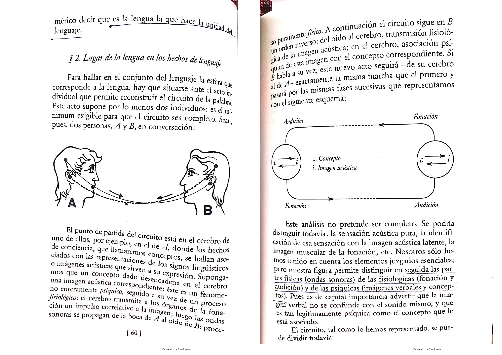
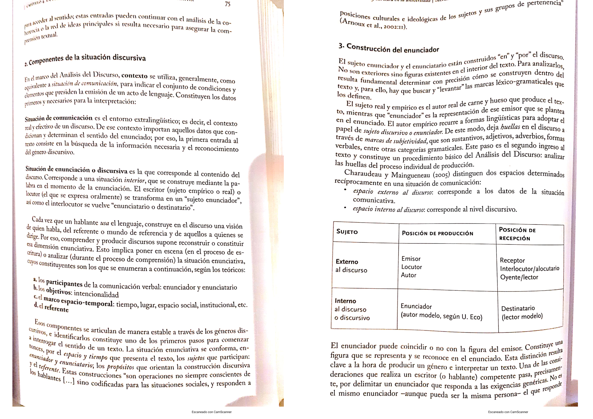

UCES 2026 · Taller de lectura y escritura. Empezá por 🎯 Final resuelto: es el modelo real del examen (confirmado por compañeros) con las respuestas y los errores típicos. El resto de las pestañas es material de apoyo.
Si tenés poco tiempo, estudiá SOLO esto. Es el modelo de final con la clave de corrección. El texto puede cambiar, pero la estructura y los conceptos se repiten. Obligatorios: Puntos 1 (25) + 2 (20) + 3 (15) + 4 (10) = 70 pts. Después en el Punto 5 elegís 1 (10) y en el Punto 6 elegís 2 (20). Sabiendo bien los obligatorios + 3 conceptos a elección, tenés el 100%.
Consigna: Definí el signo lingüístico según Saussure y sus componentes. Diferenciá lenguaje, lengua y habla, y ejemplificá.
Signo lingüístico (Saussure): entidad de dos partes — el SIGNIFICANTE (la forma sonora, lo que escuchamos) y el SIGNIFICADO (el concepto o idea mental, lo que imaginamos). Ejemplo: en "árbol", el significante son los sonidos /árbol/ y el significado es la imagen mental de un árbol.
NO es "signo y significante". Es SIGNIFICANTE + SIGNIFICADO. Varios compañeros lo pusieron mal en el final real.
Lenguaje, lengua y habla:
Plus que suma (no obligatorio): dimensiones (individual = habla / social = lengua) y aspectos (físico: voz y sonido; fisiológico: órganos del habla; psíquico: ideas e imágenes mentales).
Reparto del puntaje: signo ~10 · lengua/habla ~12 · plus ~3. Si definís bien el signo pero no diferenciás lengua/habla, no pasás de 12-14.
Consigna: Definí los cuatro. En texto mencioná al menos DOS autores. Después aplicá los cuatro al texto que leíste.
Aplicación al texto: soporte = papel (o pantalla si es digital); portador = revista o libro; formato = periodístico / de divulgación; y es un texto porque es una manifestación verbal y completa producida en una comunicación (cumple el cierre semántico de Bernárdez).
Reparto: definiciones ~12 · autores ~4 · aplicación ~4. Plus: características (comunicativo, pragmático, estructurado, adecuación) y condiciones (adecuado, efectivo, coherente, correcto).
Son "puntitos dentro de otros puntos". No están en la "Máquina de repaso": repasalas aparte. Se puntúa la justificación tanto como la etiqueta — justificá con rasgos del texto.
3.a · Género discursivo (5 pts): SECUNDARIO (Bajtín). Justificación: texto escrito, formal, con lenguaje cuidado y elaborado, propio de una esfera desarrollada (artículo de divulgación); no es una charla espontánea. Ejemplo primario: charla entre amigos, chat de WhatsApp. Ejemplo secundario: novela, artículo periodístico.
3.b · Función del lenguaje (5 pts): APELATIVA / CONATIVA (Jakobson): centrada en el receptor, sobre quien se busca influir. Ejemplos del texto: "¿Piensa usted que el libro…?" (interpela con "usted"), "Pues se equivoca" (refutación), "¿Será sólo un sueño?" (preguntas retóricas). Aclarar (Marín): hay varias funciones, pero predomina la apelativa.
3.c · Secuencia textual (5 pts): ARGUMENTATIVA. El autor sostiene una tesis (el libro es la "casete ideal", superior a los medios audiovisuales) y la defiende con argumentos, refuta al lector y usa preguntas retóricas. Hay un tramo descriptivo al inicio, pero está al servicio de la tesis.
Las 6 secuencias (memorizá): narrativa (hechos en el tiempo: cuento) · descriptiva (rasgos, adjetivos: folleto) · argumentativa (tesis + argumentos: editorial, publicidad) · expositiva/explicativa (informa objetivamente: manual) · dialogal (voces/turnos: entrevista) · instructiva (pasos, imperativo: receta).
"¿Para qué sirve el Análisis Conceptual en el Marketing?" Es opinión fundada: tomá una postura clara, fundamentala y usá conceptos de la materia.
El Análisis Conceptual le sirve al marketing porque el marketing es, en esencia, comunicación. Para diseñar un mensaje eficaz hay que dominar las competencias comunicativas (elegir el texto y el registro adecuados al público, lograr un efecto intencional, conocer el mundo del consumidor); reconocer la función del lenguaje que se usa —la publicidad es el caso testigo de la función apelativa, que busca influir en el receptor—; y adaptar el mensaje a las variedades lingüísticas del público (su edad, grupo social y región, y el registro formal o informal). Además, siguiendo a Wolton, comunicar es compartir sentidos para vincularse: una marca se inserta en los valores, símbolos y representaciones de una comunidad. Por eso, entender cómo funcionan el lenguaje y los textos es una herramienta central para el marketing.
Consigna: Elegí UNO y definilo con precisión (indicá cuál elegiste). Es una definición, no un desarrollo largo.
Elegí C) Paratexto: es la más corta y segura.
Consigna: Elegí DOS y desarrollalos a fondo (indicá cuáles). Se pide desarrollo completo, no una definición suelta.
Elegí las 2 que mejor sepas. Las más "seguras" suelen ser A) Géneros y B) Variedades.
Esta es la guía para desarrollar por escrito, no para tildar opciones: el final de Análisis Conceptual te da un tema y tenés que escribir varios párrafos explicándolo, con el autor correcto y ejemplos propios. Cada unidad abre con un recuadro Cómo desarrollarla con lo que no puede faltar en tu respuesta y los errores que más bajan nota. Los párrafos que siguen ya están redactados en formato de desarrollo: podés adaptarlos, pero mejor si los reescribís con tus palabras para que se note que entendiste y no que memorizaste.
No puede faltar: el esquema de Jakobson con sus 6 elementos y por qué Kerbrat-Orecchioni lo reformula; las 6 funciones del lenguaje bien emparejadas con su elemento y un ejemplo aplicado (no basta con la lista, hay que justificar); la distinción saussureana lengua/habla/lenguaje y qué es el signo lingüístico; la definición textual de Bajtín de género discursivo con primarios y secundarios; lectos y registros con sus subtipos completos.
Autor por concepto: Jakobson → esquema y funciones · Marín → crítica al esquema mecanicista y observaciones sobre las funciones · Kerbrat-Orecchioni → competencias y determinaciones psicológicas · Saussure → lengua/habla/signo · Bajtín → géneros discursivos · Halliday → lectos/registros (y las tres macrofunciones, que NO son lo mismo que las 6 funciones de Jakobson).
Errores típicos que bajan nota: decir que el habla es el objeto de estudio de la lingüística (es la lengua); afirmar que un texto vehiculiza una sola función (siempre hay varias, con una predominante); llamar "niveles" a las variedades lingüísticas (remite a jerarquía, está discutido); confundir lecto (según el usuario) con registro (según la situación); mezclar las 6 funciones de Jakobson con las 3 macrofunciones de Halliday como si fueran la misma clasificación.
Para desarrollar este tema conviene arrancar con Jakobson (1963), que propone un esquema de la comunicación verbal integrado por seis elementos: emisor, receptor, mensaje, canal, código y referente (este último es el tema extraverbal del que se habla, lo que está "afuera" del mensaje pero de lo que el mensaje trata). Hay que aclarar en la respuesta que ese esquema no nace de la lingüística: Jakobson lo toma de la teoría de la información de Shannon, de origen ingenieril, pensada para explicar la transmisión de señales entre una máquina emisora y una receptora. Por eso se lo describe como un modelo mecanicista: funciona bien para pensar un cable o una antena, pero es insuficiente para explicar la complejidad de la comunicación entre personas.
Ahí entra la crítica de Marín: la comunicación humana no puede pensarse como un simple pasaje de información de un polo a otro, porque ocurre siempre dentro de situaciones sociales atravesadas por vínculos, jerarquías y saberes compartidos (o no) entre los interlocutores. Conviene citar la idea de Marín de que "es imposible no comunicarse": incluso los gestos, los silencios y las ausencias comunican algo, porque se interpretan dentro de un código cultural compartido por la comunidad.
Kerbrat-Orecchioni retoma el esquema de Jakobson y lo reformula sumando todo lo que cada participante pone en juego al comunicarse, y que el modelo mecanicista no contemplaba. En un desarrollo de examen hay que nombrar sus cuatro aportes explícitamente: las competencias lingüística y paralingüística (la capacidad de armar e interpretar enunciados, más la entonación y los gestos que los acompañan); las competencias ideológica y cultural (el conocimiento del mundo o enciclopédico que cada hablante trae consigo); las determinaciones psicológicas (la imagen que cada uno tiene de sí mismo, del otro y del vínculo entre ambos); y las restricciones del universo del discurso (lo que puede y lo que debe decirse en cada situación concreta). Además reemplaza la idea de un emisor y un receptor únicos por la de instancia emisora e instancia receptora, porque en muchos textos (una publicidad, por ejemplo) no hay una sola persona detrás del mensaje sino un colectivo (agencia, marca, equipo creativo).
Para cerrar el desarrollo sirve incorporar los tres conceptos que suelen pedir aplicados a un ejemplo concreto: el ruido (cualquier interferencia en la comunicación, incluido el malentendido, que es constitutivo del proceso comunicativo y no un accidente externo), la redundancia (la repetición de información para reducir ese ruido) y la ambigüedad (la posibilidad de más de una interpretación de un mismo mensaje, que se resuelve apelando al cotexto o al contexto). El ejemplo clásico de la cátedra, "te espero en el banco" (¿la plaza o la entidad financiera?), sirve para mostrar ambigüedad léxica que el cotexto ("llevá la plata del alquiler") deshace sin necesidad de más información.
Empezá definiendo qué son las funciones del lenguaje: son las finalidades del uso de la lengua, no necesariamente conscientes para quien habla. Jakobson las limita a seis porque cada una está anclada en un elemento de su propio esquema de comunicación: la función pone el "acento" sobre uno de esos elementos. Esto es importante para el desarrollo porque muestra que la teoría de las funciones no es una lista suelta, sino que se deriva lógicamente del esquema de los seis elementos visto en el punto anterior.
Desarrollá las seis, siempre indicando el elemento sobre el que ponen el acento y un ejemplo propio (el final valora que apliques la teoría, no que la repitas de memoria):
Un desarrollo completo tiene que incorporar las cinco observaciones de Marín, porque son las que evitan el error más común (creer que un hablante "elige" una función): (a) las funciones son una abstracción teórica, nadie las elige deliberada y conscientemente; (b) lo que el hablante efectivamente elige no es una función sino un tipo de texto o discurso adecuado a la situación; (c) la interacción social estandarizó esos tipos de texto adecuados a cada situación, y ahí el hablante encuentra un marco o patrón ya disponible; (d) los tipos de texto no son las funciones, sino que las vehiculizan; (e) cada texto vehiculiza varias funciones a la vez, pero siempre hay una predominante. Esta última observación es la que más se olvida y la que más se pregunta como verdadero/falso.
Para cerrar, mencioná la clasificación de Halliday como una perspectiva distinta y complementaria, no como una lista alternativa de las mismas seis funciones: sus tres macrofunciones (ideacional, interpersonal y textual) aparecen siempre juntas e implícitas en cualquier uso del lenguaje. La ideacional expresa la experiencia del mundo y de la conciencia (es conceptualizadora); la interpersonal establece relaciones sociales entre los participantes; la textual organiza el mensaje como texto cohesivo. Si el final te pide identificar la función predominante en un enunciado, usá siempre la clasificación de Jakobson (las seis), reservando a Halliday para cuando te pregunten específicamente por sus macrofunciones.
Saussure, en el Curso de lingüística general, se pregunta cuál es el objeto de estudio de la lingüística y para responder distingue tres nociones que hay que diferenciar con precisión en el desarrollo: el lenguaje es la facultad humana, heterogénea porque combina lo físico, lo fisiológico y lo psíquico; por su heterogeneidad, Saussure sostiene que no puede estudiarse como un todo unificado. La lengua es la parte social del lenguaje: un sistema de signos, una convención del cuerpo social, exterior al individuo (nadie la crea ni la modifica en soledad). Para Saussure, la lengua ES el objeto de la lingüística, precisamente porque es homogénea y clasificable. El habla, en cambio, es el acto individual: el uso concreto que cada hablante hace del sistema, un acto de voluntad e inteligencia.
En el llamado circuito del habla (entre un hablante A y un hablante B), el signo une un concepto con una imagen acústica, entendida esta última como la huella psíquica del sonido y no como el sonido físico en sí mismo. Esta distinción es importante para no confundir la imagen acústica con la fonética: es una representación mental, no una vibración sonora.

El desarrollo tiene que cerrar con la definición del signo lingüístico: la unión de significado (concepto) y significante (imagen acústica), como las dos caras de una misma hoja de papel, inseparables entre sí. Esa unión es psíquica, arbitraria (no hay relación natural entre significante y significado) y convencional (la comunidad la sostiene por acuerdo social, no por lógica). A partir de esta idea, Saussure propone la semiología: la ciencia que estudia la vida de los signos en general dentro de la vida social, de la cual la lingüística sería apenas una parte, aunque la más desarrollada.
Bajtín, en "El problema de los géneros discursivos", sostiene que usamos la lengua siempre dentro de esferas de la actividad humana, y que cada una de esas esferas elabora sus propios géneros discursivos. La definición que hay que citar textualmente en el final es esta: los géneros discursivos son "tipos relativamente estables de enunciados". Es la frase exacta que la cátedra espera ver en una respuesta bien fundamentada. Esos tipos combinan tres elementos que conviene nombrar por separado: el contenido temático (de qué se habla), el estilo (los recursos léxicos y gramaticales elegidos) y la composición (cómo se estructura el enunciado).
Bajtín distingue dos grandes tipos de géneros. Los géneros primarios o simples pertenecen a la comunicación discursiva inmediata y cotidiana: el diálogo, la carta, la réplica en una conversación. Los géneros secundarios o complejos pertenecen a una comunicación cultural más organizada, sobre todo escrita: la novela, el drama, la investigación científica. Un punto que conviene desarrollar con un ejemplo propio es que los géneros secundarios absorben y reelaboran a los primarios: un diálogo dentro de una novela ya no es una conversación real, sino una conversación transformada por la composición literaria que la envuelve. Un audio de WhatsApp entre amigos es un género primario; si esa misma conversación aparece reproducida dentro del guion de una serie, deja de ser comunicación inmediata y pasa a formar parte de un género secundario que la reelabora con fines estéticos o narrativos.
Marín señala que la lengua, entendida como código, no es uniforme: en su uso concreto presenta variaciones. La disciplina que estudia este fenómeno es la sociolingüística, y dentro de ella Halliday estableció categorías de variedades que se replican en general en todas las lenguas, por eso se habla de variedades del código en sentido amplio. Halliday distingue dos grandes grupos que hay que diferenciar con claridad en el desarrollo: las variedades relacionadas con los usuarios, que dependen de los factores sociales de las personas (quién es cada hablante), llamadas lectos; y las variedades relacionadas con la situación comunicativa, que dependen de factores situacionales (dónde, con quién y para qué se habla), llamadas registros.
Conviene aclarar por qué se dejó de usar la expresión "niveles de la lengua": esa denominación remite a una jerarquía, a estados superiores e inferiores, cuando en realidad ninguna variedad es mejor que otra; además generaba zonas de confusión e imbricación entre categorías. Por eso hoy se habla de "variedades" y no de "niveles".
Los lectos están vinculados a los usuarios porque dependen del lugar de procedencia, la ubicación social, la ocupación y la edad de cada hablante. Sus subtipos son el dialecto (variedad debida a la región de origen o adopción, con subtipos general y regional), el sociolecto (variedad debida al grupo social de pertenencia, que expresa la diversidad de la estructura social y sus patrones jerárquicos, con subtipos escolarizado y no escolarizado), el cronolecto (variedad debida al factor edad o generacional, con subtipos infantil, adolescente y adulto) y el idiolecto, que es el modo peculiar de usar el lenguaje de un individuo particular, constituido por el cruce de su propio dialecto, sociolecto y cronolecto. Un detalle fino para el desarrollo: los lectos marcan diferencias en la pronunciación, la entonación y el vocabulario, pero no en las significaciones: cambia la forma, no la semántica de fondo.
Los registros, en cambio, no dependen de quién es el hablante sino de la situación comunicativa que exige una determinada forma de usar el lenguaje. Las tres opciones son oral/escrito, formal/informal y profesional/no profesional (este último remite a las jergas ocupacionales: jurídica, médica, técnica, de marketing). Cerrá el desarrollo con la idea de adecuación: un buen comunicador modifica su registro según cambia la situación, y es consciente de su propio idiolecto para poder flexibilizarlo según el contexto. Marín agrega un matiz que vale la pena incluir: a veces alguien mantiene deliberadamente un registro profesional frente a quien no puede entenderlo, no por descuido sino como un modo de ejercer poder sobre el otro.
No puede faltar: al menos dos o tres definiciones de autor citadas con precisión (Lázaro Carreter, Dressler, Bernárdez, Lotman) más tu propia definición de texto justificada; las cuatro nociones de paratexto/soporte/portador/formato bien diferenciadas con ejemplos; la macroestructura y las cuatro macrorreglas de van Dijk aplicadas a un texto de ejemplo; la coherencia con sus cinco reglas y la cohesión con sus recursos léxicos y gramaticales, dejando claro que son propiedades distintas.
Autor por concepto: van Dijk → macroestructura y macrorreglas (no confundir con Adam, que es Unidad 3) · Bernárdez / Marín → coherencia y sus tres dimensiones · Cassany → concepciones de la lectura · Vandendorpe → mutaciones del texto y la lectura con la tecnología.
Errores típicos que bajan nota: decir que la cohesión es requisito necesario y suficiente para que exista un texto (no lo es: hay textos coherentes con poca cohesión, y series de oraciones muy cohesionadas pero incoherentes); confundir soporte con portador (uno es el material físico, el otro quien porta el texto); aplicar mal las macrorreglas (confundir supresión con generalización); citar a van Dijk para las secuencias textuales (esas son de Adam, Unidad 3).
La cátedra pide primero elaborar un concepto propio de texto, apoyado en las definiciones de varios autores. Conviene arrancar el desarrollo con la definición de la propia cátedra como punto de partida: "texto significa cualquier manifestación verbal y completa que se produzca en una comunicación". A partir de ahí, un desarrollo sólido tiene que citar con precisión al menos dos o tres autores, sin mezclarlos entre sí: Lázaro Carreter (1971) define el texto como "todo conjunto analizable de signos", y aclara que son textos tanto un fragmento de conversación como una conversación entera, un verso o una novela completa; Dressler (1973) lo define de manera más compacta como "el mayor signo lingüístico"; Bernárdez (1982) ofrece la definición más completa para citar en un final, porque incorpora la noción de coherencia: el texto es "la unidad lingüística comunicativa fundamental, producto de la actividad verbal humana", que se caracteriza por su cierre semántico y comunicativo y por su coherencia, formada a partir de la intención comunicativa del hablante de crear un texto íntegro y de su propia estructuración; Lotman (1979) amplía la noción más allá de lo verbal, definiendo como texto "cualquier comunicación que se haya realizado en un determinado sistema de signos", de modo que un ballet, un espectáculo teatral, un poema o un cuadro son también textos en este sentido semiótico amplio.
Para Marín, un texto se define centralmente por su coherencia, y tiene tres dimensiones que conviene explicitar por separado en el desarrollo: la finalidad comunicativa (dimensión pragmática, el para qué del texto), la coherencia (dimensión semántica, la relación de sentido entre sus partes) y la cohesión (dimensión gramatical y léxica, los recursos que explicitan esas relaciones).
Sumá las características fundamentales que la cátedra pide reconocer: el carácter comunicativo (se produce dentro de una actividad comunicativa), el carácter pragmático (ocurre en una situación concreta, con un contexto y un propósito), el hecho de estar estructurado (tiene orden, reglas propias, organización interna) y la adecuación (la elección, entre todas las posibilidades que ofrece la lengua, de la más apropiada para la situación). Las condiciones de un texto escrito son que sea adecuado al destinatario y al propósito, efectivo (que logre lo que se propone), coherente (información clara, sin contradicciones, bien organizada) y correcto (sin errores de expresión ni ortografía).
Estas cuatro nociones se prestan a confusión y por eso conviene desarrollarlas siempre en el mismo orden, diferenciándolas una por una con un ejemplo compartido. El paratexto (para = al lado de) son los elementos que acompañan al texto y preparan su recepción: se dividen en icónicos (fotos, gráficos, dibujos) y verbales (título, autor, índice, epígrafe, copete, volanta, prólogo, notas al pie). El soporte es el material físico que sustenta al texto: antes fue arcilla, papiro o pergamino, después papel, y hoy también soportes electrónicos y magnéticos. El portador es quien "porta" o transporta el texto hacia el lector: un libro, una revista, un diario, una página web, un portal de noticias. El formato es la disposición del texto en el espacio, su distribución concreta sobre el soporte: formato carta, formato receta, formato periodístico, formato publicitario.
Un ejemplo que conviene tener preparado para el final: una noticia leída en Infobae desde el celular tiene como soporte la pantalla, como portador el portal de noticias, como formato la estructura periodística (volanta, título, copete, cuerpo) y como paratextos el titular, la foto con su epígrafe y la volanta. El desarrollo debería cerrar remarcando que el paratexto le da al lector hipótesis previas de lectura antes incluso de empezar a leer el cuerpo del texto.
La macroestructura, según van Dijk, es la representación abstracta del sentido global de un texto, expresable en una sola proposición: es la respuesta a la pregunta "¿de qué trata este texto?". Para llegar a esa macroestructura se aplican las macrorreglas, operaciones que reducen un conjunto de proposiciones a una sola. Son cuatro y conviene agruparlas en dos parejas para el desarrollo, porque eso demuestra que entendiste la lógica interna de la teoría y no solo memorizaste la lista.
Las dos primeras omiten información: la supresión elimina las proposiciones que no son necesarias para interpretar lo que sigue (por ejemplo, "tomó un taxi, le indicó la dirección, el taxi partió" se reduce a "tomó un taxi"); la selección omite lo que es condición, parte o presuposición de la información esencial (por ejemplo, "se puso el saco y buscó el llavero, abrió la puerta y salió" se reduce a "salió"). Las dos últimas sustituyen la información apelando al conocimiento del mundo del lector: la generalización reúne objetos o acciones bajo una palabra que los agrupa (por ejemplo, "lápices, papeles, libros, pisapapeles" se convierte en "útiles de escritorio"); la construcción reemplaza un conjunto de proposiciones por una frase nueva que el propio lector produce (por ejemplo, "se puso el saco, buscó el llavero, abrió la puerta y subió al Ford" se convierte en "se fue en auto", una frase que no estaba literalmente en el texto sino que el lector construyó).
Un dato importante para el desarrollo es que las macrorreglas se aplican de manera distinta según el tipo de texto: en una narración, la macroestructura suele condensarse en una acción; en un texto argumentativo, en una recomendación. Cerrá con un ejemplo cotidiano propio, como resumir un audio largo de WhatsApp en una sola frase ("le fue mal viajando en combi"), mostrando que eso es exactamente aplicar macrorreglas en la vida diaria.
La coherencia es la propiedad que define a un texto como tal: lo constituye como una unidad de sentido, y no como una simple suma de oraciones yuxtapuestas. Tiene una dimensión semántica (la relación entre los sentidos de las distintas partes) y una dimensión pragmática (el receptor reconstruye ese sentido apelando a su conocimiento del mundo). El emisor construye la coherencia al producir el texto, y el receptor la reconstruye al interpretarlo.
Un texto es coherente cuando cumple estas cinco reglas, que conviene desarrollar una por una con un ejemplo cada una: 1. Reiteración, las ideas del texto deben relacionarse siempre con el tema principal; 2. Progresión, la información debe avanzar, retomando el tema pero aportando siempre datos nuevos (si el texto solo repite lo mismo con otras palabras, falla esta regla aunque cumpla la reiteración); 3. Distribución, la información se organiza según su grado de importancia y sus relaciones internas (causas y consecuencias, orden temporal); 4. No contradicción, lo que se dice después no puede contradecir lo ya dicho antes; 5. Información necesaria, el texto debe contener toda la información que el lector necesita para comprenderlo, sin dar por sabido lo que no comparte con el emisor. La síntesis que conviene citar es que la coherencia se relaciona con la cantidad, calidad y disposición de la información de un texto.
Un ejemplo útil para desarrollar en el final es el de una carta mal escrita que repite la misma idea sin avanzar (falla la progresión), que amenaza y después pide por favor en el mismo párrafo (falla la no contradicción) y que no da ni fecha ni lugar de un evento (falla la información necesaria): el resultado es un texto incoherente aunque cada oración tomada por separado esté gramaticalmente bien construida.
La cohesión es la explicitación de las relaciones de sentido del texto mediante recursos concretos de la lengua. Hay que dividirla en dos grupos en el desarrollo: los recursos gramaticales (pronominalización, elipsis y conjunción o conectores) y los recursos léxicos (sinonimia e hiperonimia/hiponimia). La pronominalización reemplaza un elemento por un pronombre ("¿Dónde está el libro? No lo encuentro"); la elipsis suprime un elemento recuperable por el contexto ("mi camisa es azul, la suya verde", donde se omite "camisa"); la conjunción o los conectores indican qué tipo de relación lógica se establece entre las partes del texto (causa, contraste, consecuencia, tiempo), como "pero", "por lo tanto" o "en resumen". Del lado léxico, la sinonimia reemplaza una palabra por otra de significado equivalente ("habitación" por "cuarto"), y la hiperonimia/hiponimia conecta una clase mayor con sus elementos particulares ("caballo" como hiperónimo engloba a "bayo" o "zaino" como hipónimos).
Un punto que hay que remarcar explícitamente en cualquier desarrollo de este tema, porque es la trampa clásica de examen: la cohesión no es condición necesaria ni suficiente para que exista un texto. Un poema puede ser perfectamente coherente con muy pocos recursos cohesivos explícitos, y una serie de oraciones cargada de conectores puede resultar igualmente incoherente si no cumple las reglas de coherencia vistas en el punto anterior. Coherencia y cohesión son propiedades distintas: la primera es constitutiva del texto, la segunda es un conjunto de marcas que ayudan (pero no garantizan) a construirla.
Como marco teórico complementario, Bonorino y Cuñarro estudian las relaciones léxicas (sinonimia, antonimia, hiperonimia, polisemia, homonimia, campo léxico) como conexiones de significado entre palabras, base teórica de la cohesión léxica; Pagani, retomando a Halliday y Hasan, define la cohesión como el conjunto de posibilidades del sistema de la lengua para manifestar las vinculaciones entre los elementos del texto, funcionando como "instrucciones de procesamiento" que el escritor deja para que el lector las siga. Un ejemplo cotidiano de cohesión léxica por campo semántico: la descripción "cremoso, untable, sabor suave" permite identificar que se habla de un queso sin necesidad de nombrarlo.
Cassany, en Tras las líneas, se pregunta qué es leer y distingue tres concepciones que van de la más simple a la más completa. La concepción lingüística sostiene que el significado está contenido EN el texto, y que leer consiste en recuperarlo: es una postura que asume un significado único y objetivo. La concepción psicolingüística sostiene, en cambio, que el significado se construye en la mente del lector, a partir de su conocimiento previo y de las inferencias que realiza durante la lectura; aquí entra la noción de alfabetización funcional, entendida como la capacidad de comprender y no solo de descifrar los signos. La concepción sociocultural agrega que leer es siempre una práctica social, situada en una comunidad determinada. De esta última concepción se desprende la idea central de Cassany, que conviene citar textualmente: "leer es un verbo transitivo", porque no existe una manera única y neutra de leer, sino modos de leer específicos de cada género, cada disciplina y cada comunidad.
Un ejemplo útil para el desarrollo: la expresión "obtuve un 7" significa una nota buena en un sistema de calificación de 1 a 10, pero significa la nota perfecta en un sistema de 1 a 7; el significado de un mismo enunciado cambia según el conocimiento previo y la comunidad de quien lo interpreta, lo cual confirma la concepción psicolingüística y sociocultural de la lectura frente a la meramente lingüística.
Vandendorpe, en Del papiro al hipertexto, analiza cómo mutan el texto y la práctica de la lectura a partir de los cambios tecnológicos en su soporte. Distingue la linealidad propia del libro, que ofrece un hilo conductor a seguir, de la tabularidad propia del diario o de la página web, donde el ojo va directo a lo que le interesa sin recorrer un orden fijo; el hipertexto lleva esa tabularidad a su extremo, multiplicando los vínculos posibles entre fragmentos de texto. El libro totaliza el contenido y responde a dos imperativos que hay que nombrar en el desarrollo: la transportabilidad y la permanencia; el texto electrónico, en cambio, es frágil y lábil, porque "un hipertexto jamás está cerrado" del todo.
Vandendorpe retoma también las metáforas de la lectura digital propuestas por Heyer: ya no se lee, se navega. Esa navegación puede adoptar la forma del atiborramiento (tragar todo el contenido disponible sin selección), la exploración (recorrer sin un objetivo fijo previo) o la caza (buscar algo preciso y puntual). Un ejemplo cotidiano para cerrar el desarrollo: leer una novela de punta a punta es un acto lineal; perderse en Wikipedia saltando de link en link es una navegación discontinua y tabular; scrollear TikTok sin buscar nada puntual es exploración, mientras que googlear el horario de un colectivo es caza.
No puede faltar: las cinco secuencias/tramas de Adam con sus marcas lingüísticas y las relaciones de inserción y dominancia entre ellas; la distinción entre enunciado y enunciación de Benveniste, con deícticos, subjetivemas, modalizadores y polifonía como huellas del sujeto en el discurso; la distinción entre enunciador/enunciatario (internos al discurso) y emisor/receptor (externos); los tres actos de habla de Austin (locutivo, ilocutivo y perlocutivo).
Autor por concepto: Adam → secuencias textuales (no confundir con las macrorreglas de van Dijk, Unidad 2) · Benveniste → enunciación, enunciado, deícticos · Kerbrat-Orecchioni → subjetivemas y modalizadores (reaparece: en Unidad 1 explica el esquema de comunicación, acá explica la subjetividad en el discurso) · Sosa de Montyn y Mazzuchino → enunciador/enunciatario vs. emisor/receptor · Austin → actos de habla.
Errores típicos que bajan nota: confundir secuencia dominante (la de mayor presencia) con secuencia envolvente (la que enmarca el sentido del conjunto), que pueden coincidir pero no son lo mismo; tratar como deícticos a expresiones que en realidad son cotextuales (remiten a otro punto del propio relato, no al momento de la enunciación); confundir el acto ilocutivo (lo que se hace AL decir algo, como prometer u ordenar) con el acto perlocutivo (el efecto que se logra POR decirlo, como convencer o asustar).
Según J. M. Adam, las secuencias textuales (también llamadas tramas) son las unidades mínimas de composición textual: conjuntos de enunciados que presentan una organización interna propia, lo bastante estable como para poder ser reconocida. Un desarrollo completo tiene que aclarar dos características centrales que dio la cátedra: las secuencias se pueden descomponer en partes propias, pero al mismo tiempo dependen del texto mayor en el que se realizan; y se combinan siempre jerárquicamente, porque es muy difícil encontrar textos "puros" compuestos por una sola secuencia, aunque siempre hay una que predomina sobre las demás.
Hay que nombrar las cinco secuencias con su lógica interna y sus marcas lingüísticas típicas, porque el final suele pedir identificarlas en un texto dado: la narrativa organiza una sucesión temporal y causal de acciones que transforman un estado inicial (novela, crónica, noticia, cuento), con marcas como el pretérito perfecto simple y el imperfecto, y conectores temporales y causales; la descriptiva presenta los rasgos salientes de un objeto, persona o paisaje, sin jerarquía causal, con partes coordinadas y yuxtapuestas (catálogo, receta, definición de diccionario), con marcas como sustantivos y adjetivos en presente o pretérito imperfecto; la expositiva-explicativa responde a una pregunta explícita o implícita, y supone una asimetría entre quien explica (el experto) y quien recibe la explicación (el lego): una respuesta de parcial, un informe o un artículo científico son ejemplos; la argumentativa confronta posturas opuestas sobre un problema controvertido y opinable, buscando convencer o persuadir (nota de opinión, debate, ensayo, publicidad), con marcas como la presentación de una cuestión, una posición, pruebas y una conclusión, además de conectores de causa, consecuencia y contraste; y la conversacional o dialogal organiza un intercambio con alternancia de turnos de palabra, donde los participantes construyen juntos un único texto (obra de teatro, entrevista, chat), con marcas como los pronombres de primera y segunda persona y los guiones de diálogo.
Cerrá el desarrollo con las relaciones de inserción y dominancia entre secuencias: una secuencia puede ser dominante (la de mayor presencia cuantitativa dentro del texto), envolvente (la que enmarca y da sentido al conjunto, aunque no sea la más extensa) o incrustada (la que aparece metida dentro de otra). Dominante y envolvente pueden coincidir, pero no necesariamente: en una publicidad de auto, por ejemplo, puede contarse una pequeña historia (secuencia narrativa incrustada), describirse el motor (secuencia descriptiva) y cerrar con un eslogan del tipo "elegí seguridad, elegí X" (secuencia argumentativa que envuelve y da sentido a todo lo anterior). El final suele pedir justamente identificar cuál predomina y cuáles son secundarias, y también producir un texto propio combinando secuencias.
La base teórica de este tema es Benveniste, complementado por Kerbrat-Orecchioni. La enunciación es el acto individual de apropiación del sistema de la lengua por parte de un hablante concreto, en una situación concreta; el enunciado es el producto resultante de ese acto, el texto efectivamente pronunciado o escrito. La idea central que hay que desarrollar es que al enunciar no se transmite solamente información objetiva, sino también la manera en que el propio hablante considera esa información: el sujeto deja siempre huellas o marcas en el enunciado, a través de las formas gramaticales y léxicas que elige, y esa elección misma ya significa algo. Ningún enunciado es neutro del todo.
Los deícticos son palabras que señalan (deixis significa "mostrar") a los participantes de la comunicación y a la situación en la que ocurre, y solo pueden interpretarse desde el acá y ahora de quien habla. Hay que distinguir tres tipos: los deícticos de persona (yo, vos, nosotros, y las desinencias verbales correspondientes, que instauran al locutor y al destinatario), los deícticos de espacio (acá, ahí, allá, este, ese, aquel, y los verbos venir/ir cuando marcan la posición del hablante) y los deícticos de tiempo (hoy, ayer, mañana, ahora, la semana pasada, el año próximo). La trampa clásica de examen es distinguir un deíctico verdadero de una expresión meramente cotextual: "ayer no llovió" es deíctico porque se ancla en el momento mismo de la enunciación, pero "al día siguiente se levantó temprano" no lo es, porque remite a otro punto del relato y no al momento en que se habla; una fecha puntual como "el 10 de septiembre salió de viaje" tampoco es deíctica, porque no depende de cuándo se enuncia.
Sobre los tiempos verbales, el presente es el eje de toda enunciación: desde ese presente se organizan el pasado y el futuro. Hay que aclarar que no marcan enunciación el presente genérico o de definición ("dos más dos son cuatro") ni el presente histórico (un pasado narrado en presente para dramatizarlo). En la narración, lo que se llama "puesta en relieve" distribuye los tiempos así: el pretérito perfecto simple para los hechos nucleares de la historia, el imperfecto para lo secundario y las descripciones de fondo, y el pluscuamperfecto para los hechos anteriores al momento del relato.
Los subjetivemas, según Kerbrat-Orecchioni, son las palabras que portan la subjetividad del enunciador. Conviene diferenciar sus tipos: los nominales afectivos expresan una emoción ("el terrible crimen", "una casita humilde"); los nominales evaluativos no axiológicos hacen una evaluación cuantitativa sin juicio de valor moral ("el enorme edificio"); los nominales evaluativos axiológicos emiten directamente un juicio de valor ("intolerable"); y los verbales evalúan la acción misma, especialmente en los verbos de decir: "dijo" no es lo mismo que "admitió", "confesó" o "pretendió", y casi ninguno de estos verbos es neutro salvo el propio "decir". A esto se suman los modalizadores, expresiones que muestran la actitud del enunciador frente a lo que dice (certeza, duda, valoración): "sin duda", "quizás", "lamentablemente".
Un ejemplo integrador para el desarrollo: en el titular "el ministro admitió que la crisis es seria", el verbo "admitió" es un subjetivema verbal que da por cierta una acusación previa, mientras que "afirmó" cambiaría por completo la postura implícita del enunciador respecto de lo dicho.
La polifonía (poli = muchas, foné = voz) es la presencia de otras voces dentro de un mismo enunciado. Hay que desarrollar sus procedimientos principales: el discurso directo teatraliza otra voz, con ruptura sintáctica y marcas explícitas (guiones, comillas), y en el periodismo genera un "efecto de verdad"; el discurso indirecto relata las palabras de otro sin ruptura sintáctica ("me dijo que no lo esperara"); el discurso indirecto libre mezcla ambas voces sin marcas claras que las separen, un recurso típico de la narrativa literaria. La ironía también es un fenómeno polifónico: consiste en hacer oír una voz que sostiene un punto de vista deliberadamente absurdo, dando a entender lo contrario de lo que literalmente se dice ("lindo día, ¿no?" dicho bajo un diluvio). Cerrá con las citas intertextuales (de autoridad, defensiva, desautorizada, ejemplar) y el uso de comillas, que marcan distancia del enunciador respecto de lo citado ("no son palabras mías").
Sosa de Montyn y Mazzuchino aportan una distinción que resulta clave para no confundir planos en el desarrollo: el emisor/autor y el receptor/lector son sujetos externos al discurso, de carne y hueso, ubicados en la posición real de producción y de recepción del texto. El enunciador y el enunciatario, en cambio, son figuras construidas dentro del discurso: la imagen que el propio texto arma de quien habla y de a quién le habla. El enunciador puede perfectamente no coincidir con el emisor empírico (un narrador en primera persona no es necesariamente el autor real de la novela). De la misma manera, hay que distinguir la situación de comunicación (externa, real) de la situación de enunciación (interna al discurso, reconstruible solamente a partir de las huellas que deja el texto).

Este tema no aparecía desarrollado en el material que la cátedra usó para el 2º parcial (el apunte fuente de esta guía cubre Jakobson, Saussure, Bajtín, van Dijk, Adam y Benveniste, pero no Austin). Lo incluimos porque forma parte del programa completo de la Unidad 3 para el final. El contenido que sigue es la teoría estándar de Austin en Cómo hacer cosas con palabras (How to Do Things with Words), que es correcta y es la que habitualmente se cita en Análisis Conceptual, pero verificá con tus propias fuentes de cátedra (ficha de la materia o clases) que se use exactamente esta terminología antes de apoyarte en ella como si fuera "textual del apunte".
Austin propone que hablar no es solo describir el mundo (emitir enunciados verdaderos o falsos), sino que muchas veces decir algo es hacer algo: al decir "prometo que voy a venir" o "los declaro marido y mujer", el hablante no describe una realidad previa sino que realiza una acción mediante el propio acto de habla. A partir de esta idea distingue tres actos que se producen simultáneamente en cada enunciado y que conviene diferenciar con precisión en el desarrollo, porque suelen confundirse entre sí:
Un ejemplo para fijar la distinción: si alguien dice "hay un perro suelto en el patio", el acto locutivo es la emisión literal de esa oración con su significado; el acto ilocutivo puede ser una advertencia (la intención de prevenir a alguien); y el acto perlocutivo es el efecto que eso realmente provoca en quien escucha (que se asuste, que cierre la puerta, que no le crea). Un mismo enunciado puede tener el mismo acto locutivo e ilocutivo, pero lograr distintos efectos perlocutivos según quién lo reciba: por eso el efecto perlocutivo nunca está garantizado por el enunciado en sí mismo.
No puede faltar: la escritura entendida como proceso (no como producto) con sus tres momentos recursivos —planificación, puesta en texto y revisión—; las características del texto argumentativo (defender una tesis sobre un tema polémico para convencer); su estructura (introducción con tesis / desarrollo con argumentos / conclusión); los tipos (carta de lectores, editorial, nota de opinión, publicidad y propaganda); y los recursos argumentativos (pregunta retórica, cita de autoridad, ejemplificación, comparación, datos estadísticos).
Autor por concepto: Flower y Hayes / Cassany → la escritura como proceso cognitivo · Sosa de Montyn y Mazzuchino / Marín → el texto argumentativo, su estructura y sus recursos · Adam → la secuencia argumentativa (retomada de la Unidad 3).
Errores típicos que bajan nota: presentar la escritura como un acto lineal de una sola pasada (es recursiva: se vuelve atrás a planificar y revisar); confundir la trama argumentativa (convencer sobre algo opinable) con la expositiva-explicativa (hacer comprender, neutral); confundir publicidad (fin comercial) con propaganda (fin ideológico o político).
La cátedra concibe la escritura no como un don espontáneo ni como el simple acto de "pasar en limpio" ideas ya terminadas, sino como un proceso cognitivo que se puede aprender y mejorar, compuesto por operaciones que el escritor realiza de manera recursiva (va y vuelve entre ellas, no en una línea rígida). Se distinguen tres momentos:
Lo que conviene subrayar en el desarrollo es que estos momentos son recursivos: un buen escritor revisa mientras textualiza y replanifica mientras revisa. Es el modelo de Flower y Hayes, retomado por Cassany cuando afirma que "escribir es reescribir".
El texto argumentativo tiene como propósito defender una postura o tesis sobre un tema polémico u opinable con el fin de convencer o persuadir al destinatario, e incluso modificar sus ideas o su conducta. En él predomina la secuencia argumentativa (Adam). Sus características principales:
Diferencia clave para el examen: el texto expositivo-explicativo busca hacer comprender (es neutral y objetivo); el argumentativo busca convencer (toma partido sobre algo opinable).
Se organiza habitualmente en tres partes:
Ojo de examen: publicidad = comercial; propaganda = ideológica. Es la confusión más penada.
Son las estrategias con que el enunciador refuerza sus argumentos y persuade:
Al desarrollar, no alcanza con nombrarlos: mostrá con un ejemplo propio cómo cada recurso apuntala la tesis.
Aciertos: 0 / 0 respondidas (0 en total)
El final es escrito y de desarrollo: no hay opciones para tildar, tenés que explicar un tema con tus palabras, citando al autor correcto y aplicando la teoría a un ejemplo. Eso cambia por completo la forma de estudiar respecto de un parcial de múltiple choice: acá no alcanza con reconocer la respuesta correcta entre cuatro, tenés que poder producirla vos de cero, en un texto propio, coherente y cohesionado.
Antes de escribir cualquier respuesta, dedicá 30 segundos a planificar: identificá qué te están pidiendo (¿definir un concepto? ¿aplicar una teoría a un ejemplo? ¿comparar dos autores?), qué autor corresponde citar y qué ejemplo vas a usar para mostrar que entendiste, no solo que memorizaste. Armá mentalmente una macroestructura de tu propia respuesta antes de redactarla: una proposición que resuma en una frase de qué vas a hablar, y después desplegala en párrafos que la desarrollen sin contradecirse ni repetirse (las mismas reglas de coherencia que estudiaste para textos ajenos aplican a tu propio texto).
Estructura recomendada para una respuesta de desarrollo: 1) una oración inicial que define el concepto citando al autor correcto; 2) uno o dos párrafos que despliegan los componentes internos de esa teoría (no te quedes en la definición de una línea); 3) un ejemplo propio, no copiado del apunte, que muestre que podés aplicar la teoría a un caso nuevo; 4) si el tema lo permite, una frase de cierre que conecte el concepto con otro de la materia (por ejemplo, mostrar que entendés que las funciones de Jakobson y las secuencias de Adam responden preguntas distintas, aunque ambas puedan aplicarse al mismo texto).
Priorizá los conceptos que aparecen una y otra vez como base de otras teorías, porque desarrollarlos bien te habilita a resolver preguntas derivadas: las funciones del lenguaje de Jakobson y las secuencias textuales de Adam son los dos ejes de aplicación más frecuentes (te dan un texto y tenés que identificar y justificar). Las macrorreglas de van Dijk y las reglas de coherencia son las más procedimentales: si no practicás aplicándolas a textos concretos, en el momento del examen te trabás aunque te sepas la lista de memoria. La teoría de la enunciación (deícticos, subjetivemas, polifonía) es la más densa pero también la más valorada, porque exige un análisis fino del lenguaje: practicá especialmente la distinción entre deícticos verdaderos y expresiones cotextuales, que es la trampa más repetida.
Los temas de definición pura (conceptos de texto, paratexto/soporte/portador/formato, lectos y registros) rinden mucho por el tiempo que llevan estudiarlos: son listas relativamente cortas y cerradas, fáciles de memorizar bien y de citar con precisión.
Después de repasar la teoría: hacé el quiz completo de esta guía para chequear que las definiciones están firmes, y practicá escribiendo desarrollos completos a mano o en un documento, cronometrándote, para simular las condiciones reales del final.